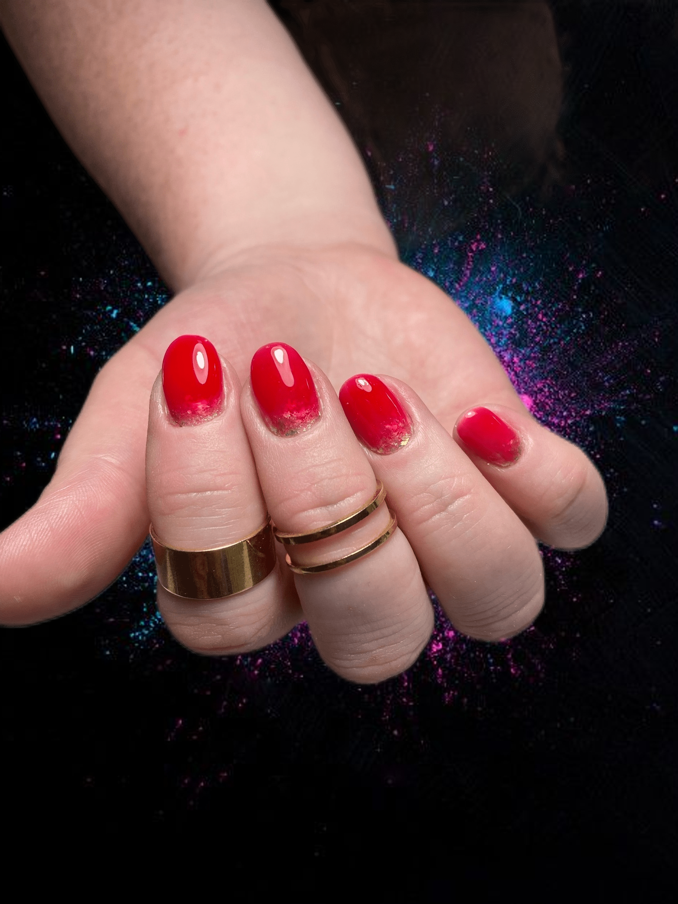
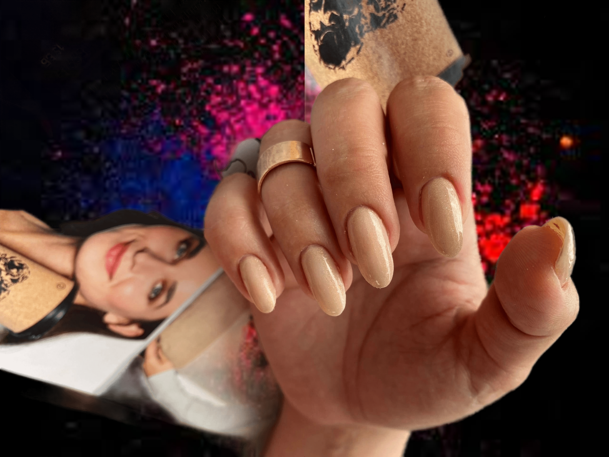
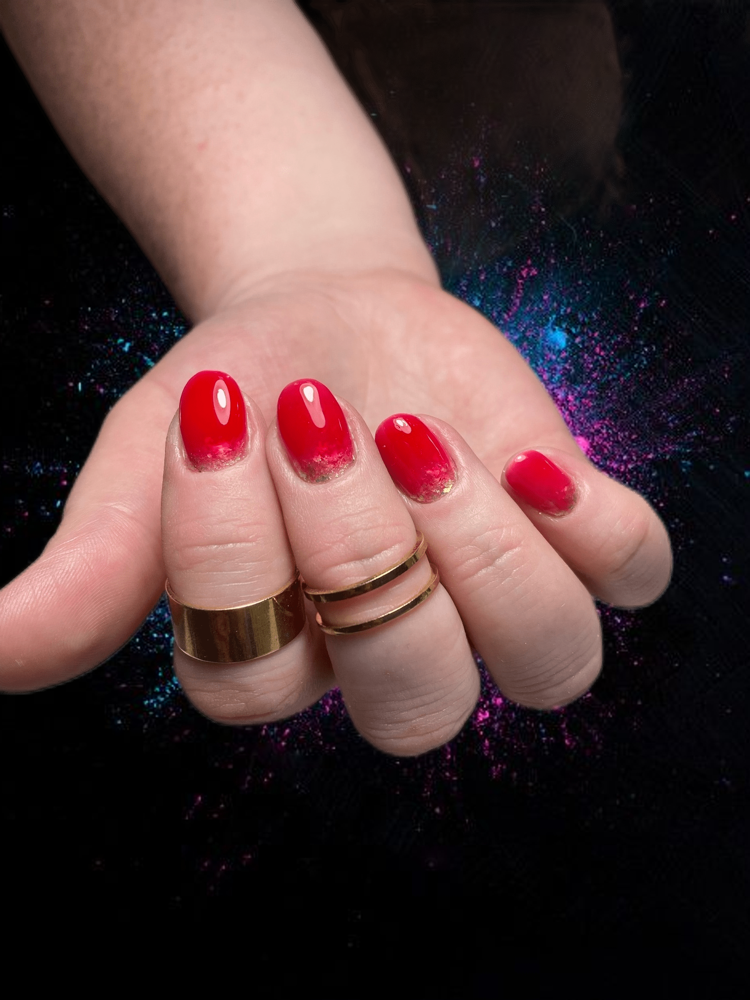
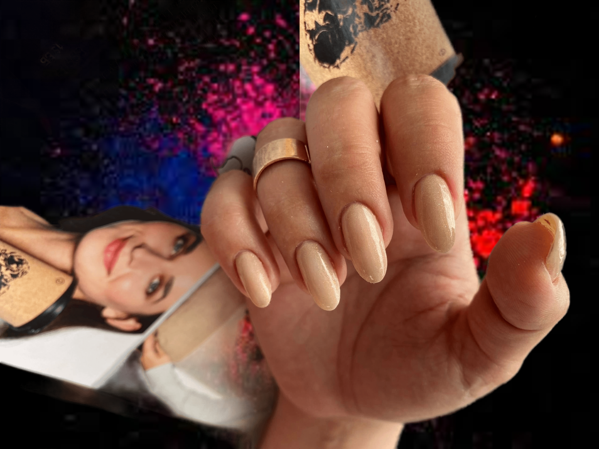

Катерина Алымова
сертифицированный мастер маникюра
Курск(Плоское)
Хочешь красивый маникюр?
Предлагаю услуги любого типа маникюра и ухода за ногтями.
Ухоженные руки и красивый маникюр - это гарантии сертифицированного мастера маникюра, Екатерины Алымовой
Специалист по маникюру, предлагает услуги по любому типу ухода за ногтями. Вы можете полностью расслабиться, наслаждаясь процедурами ухода за руками, в комфортной обстановке у опытного мастера.
 



маникюр без покрытия
Маникюр без покрытия - это процедура, включающая в себя очистку, формирование ногтей, отталкивание кутикулы, полировку ногтей и увлажнение кожи рук. Она позволяет сохранить естественный вид ногтей и придать им ухоженный вид. Такой маникюр подходит для тех, кто предпочитает естественный и минималистичный образ, а также для тех, кто хочет дать своим ногтям отдохнуть от лака.
300 Р
покрытие лаком
Маникюр с покрытием лаком - это процедура, включающая в себя очистку, формирование ногтей, отталкивание кутикулы, увлажнение кожи рук, а также нанесение лака на ногти. Этот тип маникюра позволяет придать ногтям яркий и насыщенный цвет, а также защитить их от повреждений. На сайте мастера маникюра вы можете выбрать из широкого ассортимента лаков различных оттенков и финишей, чтобы создать идеальный образ для любого случая.
500 Р
Френч
Маникюр френч - это классический вид маникюра, который включает в себя покрытие ногтей лаком светлого оттенка и белой полоской на кончиках ногтей. Этот стильный и элегантный вид маникюра подходит для любого случая - от повседневной носки до особых мероприятий. На сайте мастера маникюра вы можете выбрать из различных вариантов дизайна френча, включая различные оттенки и ширину белой полоски, чтобы создать идеальный образ для вас.
600 Р